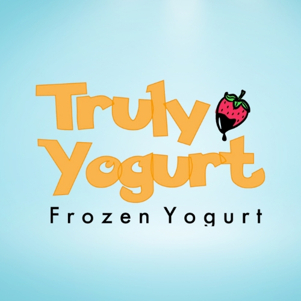

Experience
Professional experience and impact across analytics-focused roles.
IT Strategist & AI Engineer
Bridgepointe Technologies • Morristown, NJ
April 2022 – Present
- Used AI-powered prospecting tools (RevScale, LinkedIn) to identify and generate targeted lists of C-level and VP-level leads across 300+ accounts.
- Applied AI-driven analytics within RevScale to segment accounts and optimize drip campaigns, improving focus on high-value prospects.
- Leveraged the Signal CRM platform with predictive insights and Python/SQL analysis to prioritize high-value leads and pipeline opportunities.
- Conducted trend analysis and forecasting on client data to identify IT modernization opportunities and support business cases for cloud and cybersecurity solutions.
- Produced machine-learning-assisted research reports on industry trends, providing C-level clients with actionable insights for technology adoption.

Owner
Truly Yogurt • New Brunswick, NJ
September 2022 – Present
- Utilized data analysis to optimize inventory management by analyzing sales and demand data with Excel and Clover POS system, resulting in a 12% reduction in waste and improved stock levels.
- Enhanced revenue by 20% and cut costs by 15% by leveraging data insights to balance budgets, forecast demand, and optimize supplier relationships using Excel, QuickBooks, Google Sheets, and Clover.
- Analyzed social media metrics (Instagram, TikTok, Google Analytics) to measure the effectiveness of marketing campaigns, leading to a 30% increase in online orders and expanded customer base.
- Implemented a loyalty program and data-driven marketing strategies using DoorDash and UberEats data, which increased online sales by 25% and improved customer engagement.
- Managed and mentored a team of 6, creating data-driven schedules and performance metrics analysis, which improved employee job satisfaction by 30% and productivity by 15%
Assistant Manager
Rutgers Quick Shop • New Brunswick, NJ
June 2020 – May 2022
- Utilized data analysis (Excel/SQL on POS data) to optimize inventory management, reducing waste by 12% and improving stock levels.
- Enhanced revenue by 10% by building demand and budgeting reports to forecast sales and optimize supplier relationships.
- Created performance reports on sales trends and inventory turnover to support better operational decisions.